Now that you know how to create non-trivial native Android apps, we want to make them run fast. The first thing to do, before evaluating whether the application is fast enough, is to try building and running the project in the release mode, as opposed to the debug mode (see section Preparing for profiling below). If that didn’t give you enough speed-up, you will have to employ heavier tools. To find the hot spots in your application and optimize them away, you have to profile the application code. There are several tools and approaches that will help you in profiling on Tegra-based devices.
In this tutorial we will learn how to use the first and the second approach for the code example SimpleImageOpenCV.
For PerfHUD ES, we will use the last of the OpenGL ES tutorials, SimpleImageDisplayGL.
First of all, we need to check whether you have the profiling tools. If you chose to install the complete version of TADP 2.0 you already have Tegra Profiler (on Windows) and PerfHUD ES in your NVPACK folder.
For all the profilers you need to add these flags in the Application.mk file:
APP_CFLAGS += -fno-omit-frame-pointer -mno-thumb
If compiler optimizations are causing incorrect function backtraces, you can add -g flag:
APP_CFLAGS += -fno-omit-frame-pointer -mno-thumb -g
We need to make sure your application is compiled in release mode. If you created build configurations, right-click on the project’s name in the in the Project Explorer pane, then Build Configuration > Set Active > Release. Otherwise, right-click on the project’s name in the in the Project Explorer pane, then Properties; click on the C/C++ Build entry in the left pane and look at the Build Command field: if it contains NDK_DEBUG = 1 either remove it or set it to zero.
Note
You might find in the documentation for the profiling tools that another solution to the problem of incorrect backtraces is to compile your application in debug mode, using for instance the flag:
APP_OPTIM := debug
in the Android.mk file. We discourage you from doing this because profiling information gathered on un-optimized code does not correctly reflect the performance you can expect if you let the compiler optimize the code.
Now, clean the project, compile it, and you’re ready to start profiling.
This tool is pretty easy to set up and use, therefore it is a recommended choice for Windows hosts. There is a complete user guide that can be accessed from $NVPACK_PATH\docs\index.xhtml but we’ll go over the basics with a full example here.
Launch Tegra Profiler and start a new profiling report (Analyze > Sample an Application...)
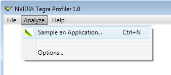Now in the Target field you should see your device. In the Package field select Deploy to Device and then select the apk file that you want to profile. Since we are profiling our OpenCV example, the apk file should be in <Your Workspace>\SimpleImageOpenCV\bin\SimpleImageOpenCV.apk. The workspace is probably in $NVPACK_PATH\nvsample_workspace if you copied the files during import, or in \tutorials if you didn’t.
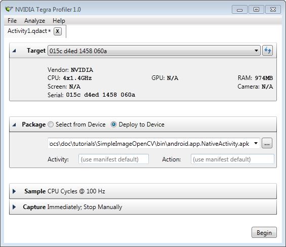Tegra Profiler can only profile applications that have been signed with NVIDIA’s custom application signature. The easiest way to solve this is to make Tegra Profiler sign the apk file automatically: Analyze > Options > Sign unsigned packages automatically.
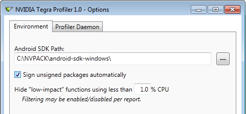To avoid conflicts with different signatures, in case you have the application already installed, you should first uninstall it. You can do it from a shell a shell:
adb uninstall com.nvidia.tutorial
or you can do it from your device (Settings > Applications > [Select app] > Uninstall).
On Windows, if PowerShell is not in your system’s path you need to add it (it is usually located at: C:\WINDOWS\system32\WindowsPowerShell\v1.0). Otherwise you might get the error:
Windows cannot find 'PowerShell'. Make sure you typed the name correctly, and then try again.
We also need the Tegra Profiler daemon in order to profile. Tegra Profiler will install it the first time it’s run. So let’s hit Begin and OK on the warning to let this happen. We have to manually start the daemon the first time we use it, so you might get an error such as (click on “Details” to see it):
Dynamic exception type: class AlibError
std::exception::what: perf component not found
To start the daemon go in the applications pane, click on Tegra Profiler and hit the Start button. If the button is greyed out, reboot your Android device and try again. After the daemon is running, click Begin again in the Tegra Profiler window, and you should see in the bottom right corner of the window that Tegra Profiler is sampling:
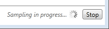On your device you should see the application running. Click on CAM and move the tablet around. When you’re done, hit the Stop button. Note that to get statistically consistent results you should take at least a couple of minutes of sampling. In the end you should see something like this:
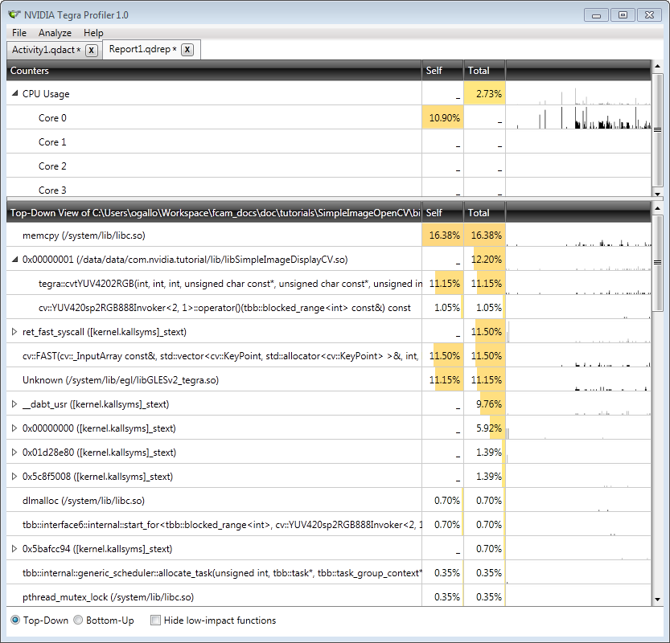From this report it is easy to see which functions required more time to run (the percentages by the different function names), as well as the temporal distribution of the different calls (in this example calls are mostly uniformly distributed).
Sometimes, instead of sampling what function is being executed and determining a rough percentage of time spent on different functions, you need to get exact execution times of particular lines (or blocks) of the code. To this end, you can use timers. In this tutorial we provide you with a timer class that allows you to do that, or you can write your own. If you are familiar with Matlab’s tic and toc functions you’ll find yourself at home with this class.
Much like Matlab’s timing functions, this timer saves the timestamps of successive calls of the function Timer::tic() in a stack. Subsequent calls to Timer::toc() provide the time elapsed (in ms) from the last Timer::tic() call, and pop that timestamp from the stack. You can also get the time in milliseconds since the construction of the timer by using Timer::get().
To see how to use the timer class, we will play again with the SimpleImageOpenCV example. Let’s measure how long it takes to compute Fast features on your device. Copy Timer.cpp and Timer.h from /tutorials/SharedCode into <Your Workspace>/SimpleImageOpenCV/jni. (If you copy them outside of Eclipse, you should select jni folder and refresh with F5 so you’ll see them.) Then, open OpenCV_native.cpp. Let’s include a couple of headers in this file (more information about logging can be found in Printing to Android log from native code):
#include "Timer.h" // The timer class
#include <android/log.h> // We will use android's log to print the timing results
// Let's define a tag called MyTimer so that we can filter logs later
#define LOG(...) __android_log_print(ANDROID_LOG_VERBOSE, "MyTimer", __VA_ARGS__)
We also need to add the timer source file to the list of source files in the Android.mk file:
LOCAL_SRC_FILES := main.cpp Engine.cpp DrawRect.cpp RectShader.cpp OpenCV_native.cpp Timer.cpp
Now let’s find the chunk of code we want to analyze in OpenCV_native.cpp and let’s add a couple of lines to the function COpenCVSample::runLoadCVImg():
// detect FAST features
Timer t;
t.tic(); // Start the timer
std::vector<cv::KeyPoint> v;
cv::FastFeatureDetector detector(50);
detector.detect(g_img, v);
LOG("cv::FastFeatureDetector took %d ms to run.", t.toc()); // t.toc() gives the time in ms since t.tic()
Before we run the code, let’s open the LogCat view in Eclipse to see the logs. Go to Window > Show View > LogCat. If you don’t see the LogCat option, go to Window > Show View > Other... and look for LogCat. Now let’s add a filter so that our logs don’t get lost in a bunch of clutter. Click on the plus symbol in the Filters pane:
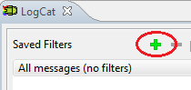if you don’t see the filter pane, you need to toggle the Filter view button:
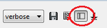Finally name the filter and use the same tag we defined in the cpp file:
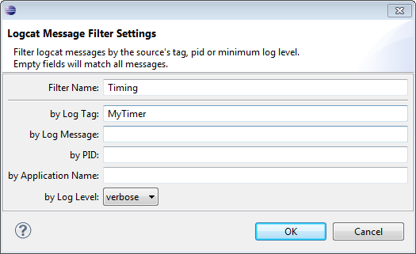Now if we run the application on the device and select the option IMAGE, we should see in the LogCat viewer something like the following (click on the image to enlarge):
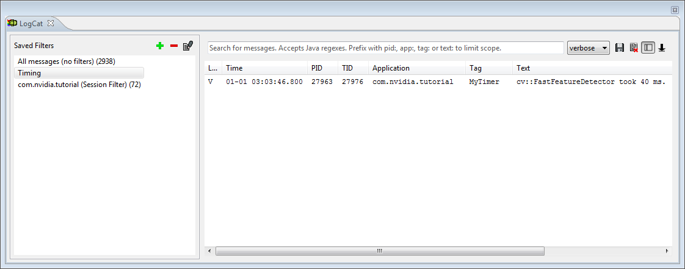PerfHUD ES is a complete tool for profiling and debugging OpenGL ES applications. It allows to access performance information, as well as the call trace, mipmaps, etc.
If you chose to install the complete version of TADP 2.0 you already have PerfHUD ES in your NVPACK folder. In the same folder you can find a guide to its use. In order for PerfHUD ES to be able to gather statistics, we have to first enable the target support.
Connect your device; then go to NVPACK_PATH/perfhud_switch folder and run the file enable_perfhud.bat (in Linux or Mac enable_perfhud.sh). Note that this script only enables support until the device is rebooted, so you’ll have to do it again if you turn your device off.
Let us use the SimpleImageDisplayGL tutorial to learn the basics of the profiler. Because of the way PerfHUD ES talks to the application, we need to recompile the project adding internet permission in AndroidManifest.xml:
<manifest xmlns:android="http://schemas.android.com/apk/res/android"
package="com.nvidia.tutorial"
android:versionCode="1"
android:versionName="1.0">
<uses-permission android:name="android.permission.INTERNET" />
[...]
Now you can compile and run the application on your device. Let’s open LogCat and type NV in the search field. You should see the following messages (and a bunch more):
NV Interposer: nvdmInit called by perfhud
NV Interposer: NVPerfHUD ES is active.
NV Interposer: Communication layer init succeed, listen on port 7876.
Note
If you have a firewall software installed on your host machine you might have to open the port indicated in the LogCat as shown above to allow PerfHUD ES to communicate with the application on your Tegra device.
We can now start PerfHUD ES. You should see a screen like the one below:
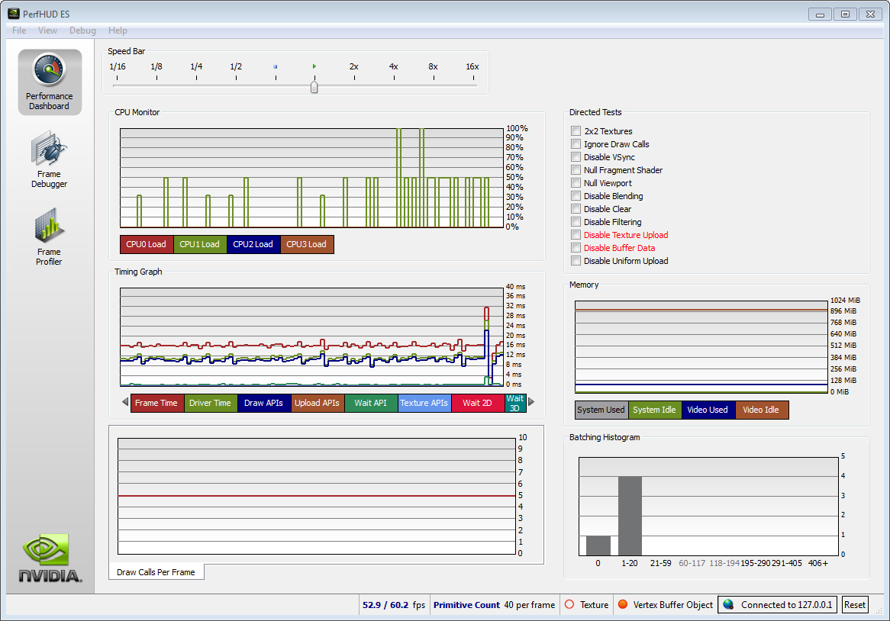The first graph shows the CPU load for the different CPUs, the second shows a bunch of statistics. You can choose to show/hide any of these statistics by clicking on their name below the graph. Let’s switch to the Frame Debugger mode (second button on the left-hand frame):
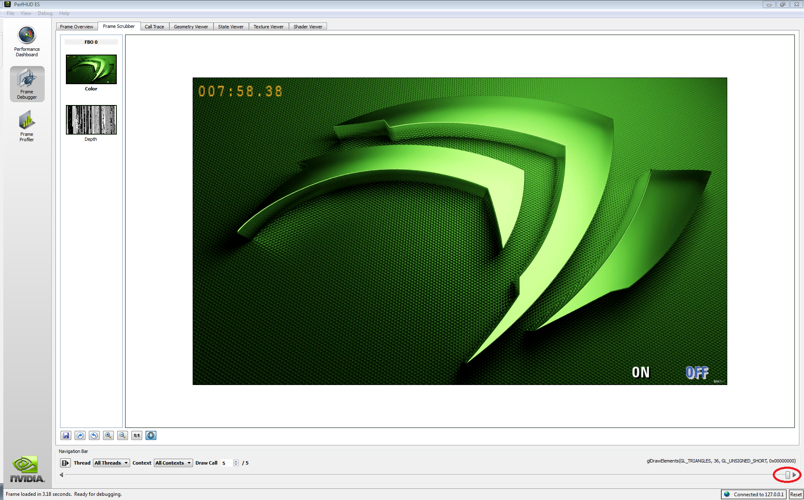There are several tabs at the top. The currently active tab (Frame Scrubber) shows the content of the frame buffer at the time of different draw calls. In the current view, the word OFF should be blinking: that was the element that was drawn by the current call. At the bottom of the window you will see a scroll-bar (circled in red in the figure above). Right above it you will see the call to glDrawElements(). If you drag the bar back one step by 3 steps you will see that the background was rendered (hopefully you will not get an attack of epilepsy) with the call glDrawElements().
Note that this bar is common to all the Frame Scrubber tabs. For instance, if you go to the Texture Viewer you can use it to change between different draw calls and see the corresponding textures (it should flip between the background image and different sets of fonts). When you look at mipmaps you can actually click on any of the different levels and
The most interesting tab is probably the Shader Viewer tab. Here you can see what shaders are called and when. In our example, we do not precompile the shaders so we can see the code, interact with it, and even change it at run-time!
Let’s look at the top-left pane:
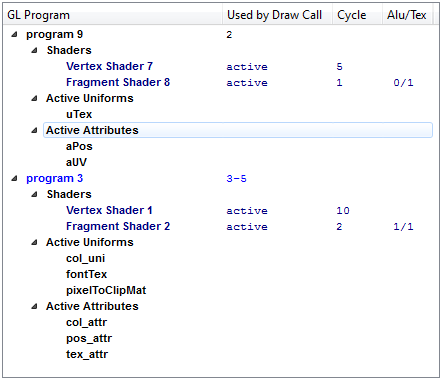Note that the actual numbers of the programs might be different in the window you are looking at. In this case, program 3 is relative to the text we’ve drawn on the screen (the two buttons and the timer) and was therefore used by the last three draw calls (as indicated by “3-5” in the Used by Draw Call column). Since the scroll-bar at the bottom is all the way to the left, this program is shown as active (light blue). Note that you can click on any of the attributes or uniforms to see values and information. Now use the navigation bar to go back to the second draw call and you will see that program 9, which is relative to the background texture, becomes active. The fragment and vertex shaders shown in the right pane are plain.frag and plain.vert from our code.
Let’s go on the device and hit the ON button in the example application; PerfHUD ES will not update this view automatically, we need to hit the button to Capture next frame, indicated by the red circle in this screenshot:
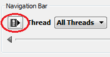Now the shaders in the right pane are our filter.vert and filter.frag. Note that, if you click on uniforms within the code you will be able to see information about it in the left panes. Let’s go to the fragment shader, and change the sobel filter to be from vertical to horizontal. Click the Edit Shader button and replace the first 6 lines of the main function with:
gl_FragColor = texture2D( uTex, vTexCoord + vec2( uD.x, uD.y ) );
gl_FragColor += 2.0 * texture2D( uTex, vTexCoord + vec2( uD.x, 0.0 ) );
gl_FragColor += texture2D( uTex, vTexCoord + vec2( uD.x, -uD.y ) );
gl_FragColor -= texture2D( uTex, vTexCoord + vec2( -uD.x, uD.y ) );
gl_FragColor -= 2.0 * texture2D( uTex, vTexCoord + vec2( -uD.x, 0.0 ) );
gl_FragColor -= texture2D( uTex, vTexCoord + vec2( -uD.x, -uD.y ) );
Then hit Compile and Apply. Look at the screen of your device and you should see that now the screen has changed:
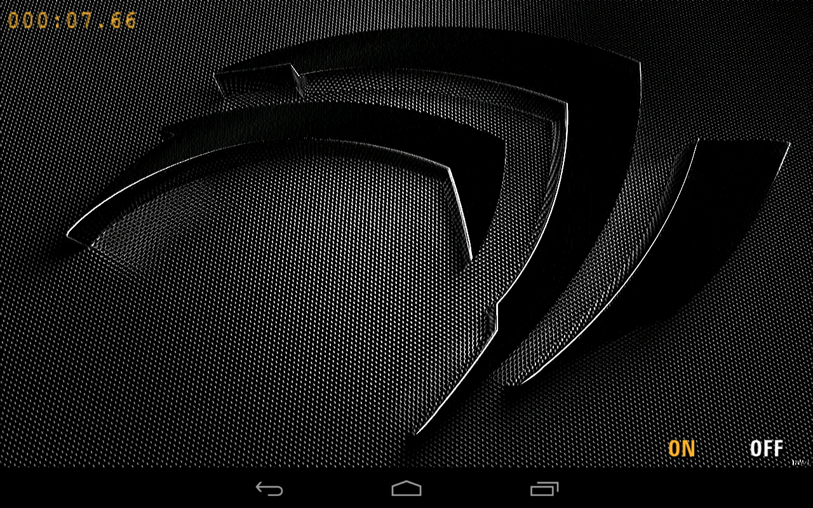PerfHUD ES is also a powerful profiling tool. However, aside from the information provided in the Performance Dashboard tab, the profiling data is only available for specific system images and, therefore, we will not cover those capabilities here.
{kind=link}
{kind=link}
{kind=link}
{kind=link}
{kind=link}
{kind=link}
{kind=link}
{kind=link}
{kind=link}
{kind=link}
{kind=link}
{kind=link}
{kind=link}
{kind=link}